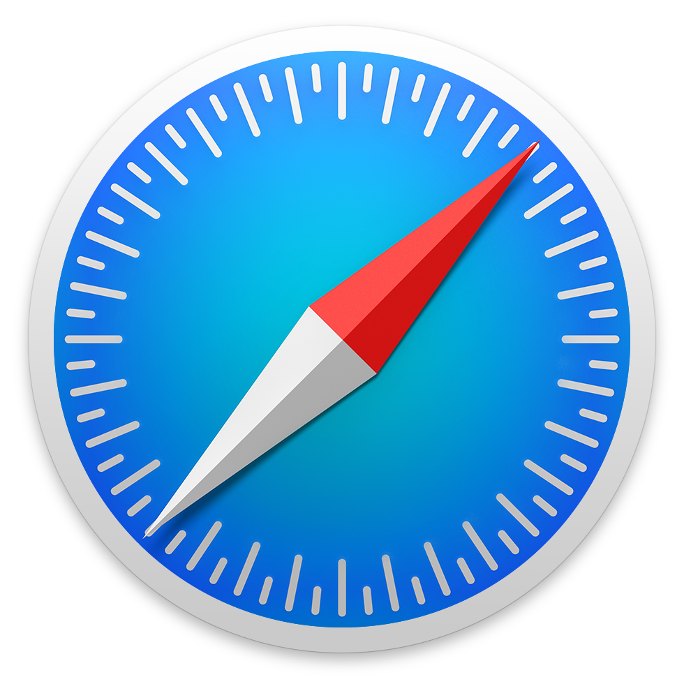

Web APIs to improve User Experience
Leonardo Faria

Can I use
Shows compatibility tables for support of HTML5, CSS3, JS and other technologies in various browsers.
caniuse.com
Geolocation
Fetches latitude and longitude
When to use?
Show information based on location
Geolocation
var info = document.getElementById('info');
navigator.geolocation.getCurrentPosition(function(position) {
var lat = position.coords.latitude;
var lon = position.coords.longitude;
info.innerHTML = 'Latitude: ' + lat + ' - longitude: ' + lon;
});
Geolocation

Geolocation
|  | |||
| Chrome 10 | Safari 5 | Firefox 3.5 | IE 9 |
Local Storage
Stores key-value pair data in the client side
When to use?
Store personal preferences
Local Storage
localStorage.setItem('Name', 'Leonardo');
localStorage.setItem('Job', 'Developer');
console.log(localStorage.length);
console.log(localStorage.getItem('Name'));
localStorage.clear();
console.log(localStorage.length);
Local Storage
Local Storage
| Chrome 10 | Safari 4 | Firefox 3.5 | IE 8 |
Camera
Allows applications to manage the camera of the device
When to use?
Take photographs or record videos
Camera
var video = document.getElementById('video');
var canvas = document.getElementById('canvas');
var context = canvas.getContext('2d');
var button = document.getElementById('snap');
navigator.mediaDevices.getUserMedia({video: true}).then(function(stream){
video.src = window.URL.createObjectURL(stream);
video.play();
});
button.addEventListener('click', function() {
context.drawImage(video, 0, 0, 640, 480);
});
Camera
Camera
| Chrome 17 | -- | Firefox 17 | Edge 12 |
Page Visibility
Allows applications to manage the camera of the device
When to use?
Take photographs or record videos
Page Visibility
window.addEventListener('visibilitychange', function() {
if (document.hidden) {
document.title = 'Tab is hidden';
} else {
document.title = 'Tab is focused';
}
});
Page Visibility
Page Visibility
| Chrome 16 | Safari 6.1 | Firefox 10 | IE 10 |
Online State
Exposes a network connection availability information
When to use?
Provide feedback to user
Online State
var info = document.getElementById('info');
var status = navigator.onLine ? 'online' : 'offline';
info.innerHTML = status;
window.addEventListener('offline', networkStatus);
window.addEventListener('online', networkStatus);
function networkStatus(e) {
info.innerHTML = e.type;
}
Online State
Online State
| Chrome 16 | Safari 5 | Firefox 41 | IE 9 |
Vibration
Provides access to a form of tactile feedback
When to use?
Alert wrong data in forms
Vibration
// Vibrate for 1 second
navigator.vibrate(1000);
// Vibrate with a pattern (vibrate, wait...)
navigator.vibrate([400, 300, 300, 200, 500]);
Vibration
Vibration
| Chrome 30 | -- | Firefox 11 | -- |
Battery Status
Provides battery information from desktop and mobile devices
When to use?
Alert user to charge their devices
Increase product prices 👹
Battery Status
var info = document.getElementById('info');
info.innerHTML = status;
navigator.getBattery().then(function(battery) {
info.innerHTML = battery.level * 100;
battery.addEventListener('levelchange', function() {
info.innerHTML = battery.level * 100;
});
});
Battery Status
Battery Status
| Chrome 38 | -- | Firefox 43 | -- |